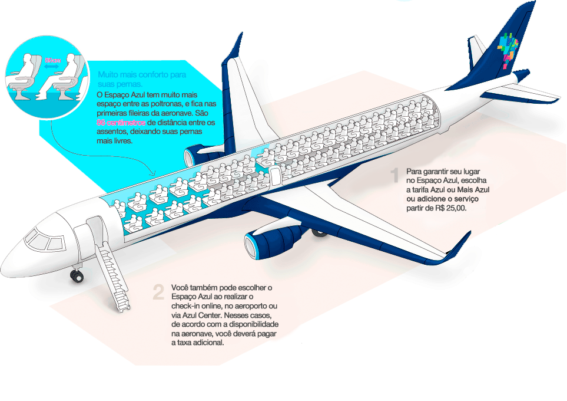
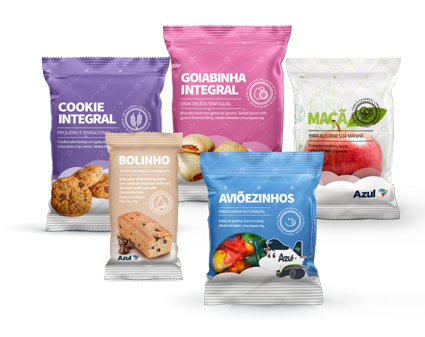
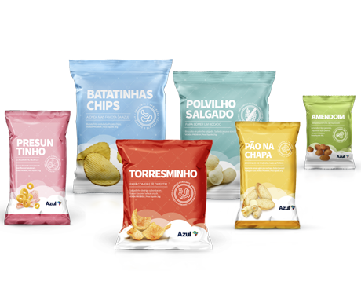
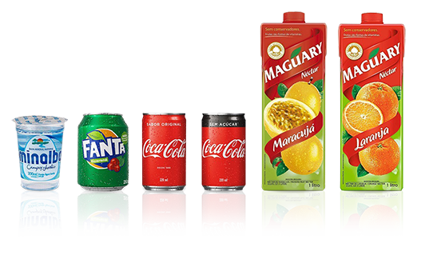

Seja bem-vindo a bordo da companhia que tem orgulho em servir o Brasil.
Com a Azul você está sempre onde merece: Lá em cima. Isto porque aqui nós fazemos de tudo para você se sentir especial. As características e diferenciais de nosso serviço e atendimento são resultado do trabalho de um time que pensa o tempo todo em suas necessidades. Começa pelos nossos aviões Embraer 195, 190 e Airbus A320, que oferecem mais espaço para as pernas; passa pelo serviço de bordo que inclui doze tipos de snacks dos quais você pode servir-se à vontade; está no entretenimento a bordo com monitores individuais; nas tarifas competitivas; em nossa malha abrangente que inclui cidades do interior; nos voos sem escalas e em um programa de relacionamento inovador: o TudoAzul.
Somos a companhia aérea que mais cresceu no Brasil desde que iniciamos nossas operações em dezembro de 2008, contando atualmente com a maior malha aérea do país atendendo mais de 100 destinos com 792 decolagens diárias. Além disso, expandimos nossas operações com voos diretos para os Estados Unidos e Portugal, operando com as aeronaves A330 equipadas com o mais tecnológico sistema de entretenimento a bordo, refeições feitas especialmente para as classes Business e Economy. Além disso, mais rotas internacionais são operadas pela Azul: Buenos Aires, Punta Del Este, Montevidéu e Caiena.
Hoje, com aproximadamente um terço do mercado brasileiro de aviação civil em termos de decolagens, a Azul consolida-se como a terceira maior companhia aérea do País. A clara visão de negócio, traduzida no contínuo crescimento de sua frota, malha de destinos, linhas operadas e participação de mercado, faz da Azul uma realidade de notável sucesso. Neste período, a empresa atingiu recordes mundiais e conquistou alguns dos melhores índices do setor de aviação brasileira.
A Azul supera a cada mês os números de crescimento. O papel da Azul é estimular o tráfego aéreo e dinamizar a economia brasileira por meio de uma equação tão simples de entender quanto difícil de imitar: preços baixos com alta qualidade de serviços. A qualidade de seus serviços já foi atestada por inúmeros prêmios, nacionais e internacionais.
Mapa de Rotas
A Azul é a companhia aérea com mais cidades brasileiras atendidas. São mais de 120 destinos por todo o Brasil, além dos internacionais para Flórida e Lisboa.
Com o check-in mobile, você resolve os últimos detalhes da sua viagem antes de chegar no aeroporto.
Você pode fazer o check-in de 72h a 90 min antes do voo;
Se tiver bagagem para despachar, é só ir direto no balcão;
Check-in automático
Check-in automático
Com o check-in automático, seu cartão de embarque chega direto no WhatsApp poucas horas antes do voo.
Enviado por perfil verificado da Azul no WhatsApp;
Válido para clientes com telefone celular cadastrado na reserva e que não tenham realizado o check-in antecipado nos canais Azul até 3 horas antes do voo;
Se tiver bagagem para despachar, é só baixar o app, acessar o seu cartão de embarque e imprimir as etiquetas no aeroporto.
Serviço disponível em versão beta para voos decolando de aeroportos selecionados. Em breve, disponível para todos os voos Azul. Segurança, inovação e agilidade pra você curtir cada minuto da sua viagem.
Agora que fez o check-in, vamos aprender a embarcar
No vídeo abaixo podemos visualizar como funciona o Tapete Azul
O Espaço Azul é composto por 22 ou 36 assentos nas aeronaves Embraer 190, 195 e A320, mediante 86 cm de distância entre os assentos. Sendo disponível por trecho, por cliente, através de compras pelo site, callcenter, aeroportos e lojas. O serviço pode ser adicionado na tarifa Azul ou na Mais Azul, a partir de R$ 25,00, dependendo do trecho escolhido, para um ou mais passageiros da reserva. Além de mais espaço, você também tem compartimento de bagagem prioritário. Para garantir ainda mais essa comodidade aos nossos clientes, temos o pacote Espaço Azul. Basta ter uma conta no programa de vantagens TudoAzul e no ato da sua compra adicionar. Você pode escolher entre 5, 10 ou 15 Espaço Azul e tem o prazo de 1 ano para utilizar os mesmos. Lembrando que o espaço entre os assentos, nas poltronas que não possuem Espaço Azul nas aeronaves Embraer 190/195 é de 79 cm e nas aeronaves A320 de 76,2 cm.

Embarque
Agora que você já nos conhece, escolheu seu destino, fez o check-in e já garantiu o seu Espaço Azul, vamos embarcar! Por favor veja nosso vídeo de segurança:
Bebidas & Snacks
Na Azul, a segurança tem sempre prioridade. Informamos que, por determinação da ANVISA, não é permitido se alimentar a bordo da aeronave, exceto crianças até 12 anos e adultos em condições especiais. Por esse motivo, o serviço de bordo está suspenso.
São nove opções de snacks e sete bebidas que variam em cada voo e você pode aproveitar na sua próxima viagem.
Dá só uma olhadinha nas nossas opções:



Nossos Snacks & Bebidas
Snack doce
Snack salgado
Bebidas
Goiabinha
Batatinha Chips
Café (servido de acordo com horário e tempo de voo)
Cookies Integrais de Laranja com Gotas de Chocolate (com sete grãos)
Amendoim Japonês
Coca-Cola
Aviõezinhos (balas de gelatina em formato de avião)